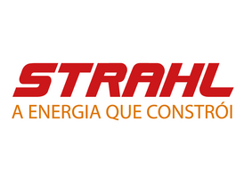
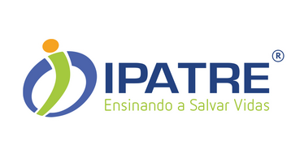
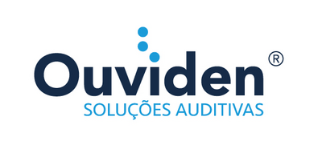
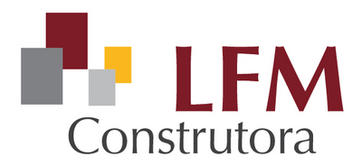
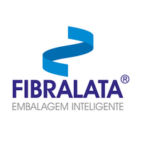
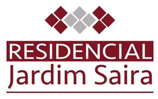

Ismael Soares · Consultoria de marca
Marca não é imagem. É estrutura.
Há mais de 20 anos projeto o posicionamento, o e-commerce, os canais de conteúdo e o relacionamento com cliente de marcas que se tornaram referência nos seus mercados: da indústria à saúde, do varejo especializado ao agronegócio regional.
Marcas que atendo e já atendi






O consultor
Ismael Soares
 Retrato
Retratoa inserir
Atuo há mais de 20 anos como gestor de marca, à frente de projetos de posicionamento, e-commerce, conteúdo e relacionamento com cliente para empresas de setores distintos: da indústria de materiais elétricos à educação em saúde e ao varejo especializado.
Não atuo como agência: sento ao lado de quem toma a decisão, do diagnóstico à execução, acompanhando o resultado de perto em cada marca com que trabalho.
- → Posicionamento de marca e identidade
- → Implantação e gestão de e-commerce
- → Criação e gestão de canais de conteúdo
- → CRM e relacionamento com clientes e stakeholders
- → Gestão de marketing contínua
Cases
Três setores. Um método.
Indústria, educação e varejo especializado: prova de que um bom plano e arquitetura de marca se adapta a qualquer setor.
Marca consolidada no setor de materiais elétricos industriais, com necessidade de estruturar um canal de comunicação direto com o mercado e profissionalizar a operação de e-commerce.
O que foi feito
- Implantação e gestão de e-commerce (loja.strahl.com)
- Gestão de PDV
- Fotografia de produtos e vídeos
- Catálogo técnico
- Campanhas de vendas
- Campanhas de comunicação e estratégia de posicionamento de marca
- Gestão de marketing
- Criação do canal StrahlConecta: planejamento completo, roteiro de cada episódio, participação como âncora e entrevistador, edição do material final e publicação em LinkedIn, Instagram e blog da marca
Portfólio
Referência nacional em cursos e instrutores na área da saúde, em processo de expansão de polos educacionais pelo país.
O que foi feito
- Planos de ampliação de polos educacionais
- Material de comunicação para os polos
- Criação de submarcas e identidade dos canais (site e loja de cursos)
- Implantação e identidade e-commerce (loja.ipatre.com.br)
- Criação de campanhas
- Landing pages
- Redes sociais
Portfólio
Rede regional de lojas de aparelhos auditivos, representante Starkey, competindo diretamente com marcas nacionais estabelecidas.
O que foi feito
- Projeto de marca e identidade
- Identidade de lojas
- Estratégia de comunicação, desenvolvida e gerenciada ponta a ponta
- Campanhas de comunicação e promocionais
- Ações de apoio para eventos
- Redes sociais
- Edições de vídeos
Portfólio
Outros projetos realizados
Além dos três cases em destaque, outros projetos de marca, comunicação e identidade já foram conduzidos para clientes de diferentes setores.
Serviços
Da estrutura à execução
Posicionamento de marca e identidade
Diagnóstico, definição de posicionamento, naming e identidade visual e verbal.
Implantação e gestão
Identidade de loja física, estruturação de e-commerce e planejamento estratégico, com acompanhamento contínuo.
Canais de conteúdo
Planejamento editorial, roteirização, produção e edição, modelo aplicado no StrahlConecta.
CRM e relacionamento
Funil, pipeline e réguas de relacionamento com clientes e stakeholders.
Gestão de marketing contínua
Acompanhamento de indicadores e ajuste de estratégia no médio e longo prazo.
Para a indústria e agroindústria da região de Campinas e Jundiaí
Sua marca já é forte no relacionamento pessoal. Está na hora de ela ser forte no mercado.
Tenho grande interesse em ajudar empresas da região a se estruturarem, usando mais de 20 anos de experiência em gestão de marcas para contribuir com os setores industrial e agroindustrial da região de Campinas e Jundiaí. Experiência consolidada, interesse real em transformar marcas.
São 7 anos de atuação com a Ouviden, 15 anos com o IPATRE e mais de 20 anos com a Strahl, sempre atuando diretamente com os decisores, formando equipes internas ou trabalhando com agências parceiras para estruturar comunicação com propósito, estratégia e resultado.
- Sua marca depende do relacionamento pessoal do vendedor?
- Vocês não têm um canal de conteúdo próprio, só feiras e representantes?
- O relacionamento com clientes e revendas está "na memória" de alguém, sem CRM?
- A imagem da empresa está datada frente a concorrentes que já profissionalizaram a comunicação?
Strahl é indústria B2B tradicional, mesma lógica de negócio da agroindústria regional. Teve e-commerce implantado, posicionamento estruturado e um canal de conteúdo próprio criado do zero, hoje referência no setor de materiais elétricos industriais.
Solicitar diagnósticoTambém para outras empresas da região
O interesse não para na agroindústria.
A agroindústria é onde vejo a oportunidade mais clara para aplicar esse método agora, mas também posso ajudar outras empresas da região de Campinas e Jundiaí, de qualquer setor, que sintam que a marca não acompanha o tamanho do negócio.
Também quero um diagnóstico →Perguntas frequentes
Dúvidas comuns sobre contratar um consultor de marca na região
Como escolher um consultor de marca em Jundiaí ou Campinas?
Procure histórico comprovado, não só portfólio bonito: peça cases reais, pergunte como o profissional mediria o sucesso do trabalho e priorize quem propõe um diagnóstico antes de qualquer execução. Presença regional ajuda no relacionamento de longo prazo com decisores locais, mas o mais importante continua sendo a experiência estratégica, não só a proximidade geográfica.
Você atende empresas fora de Jundiaí e Campinas?
Sim. A prioridade atual é a região de Jundiaí e Campinas, mas o histórico de atuação inclui projetos em outras regiões do Brasil, sempre com o mesmo método de diagnóstico, posicionamento e execução.
O atendimento é presencial, remoto ou híbrido?
Híbrido. Reuniões presenciais fazem sentido para o diagnóstico inicial e para momentos-chave de decisão; o acompanhamento contínuo pode ser remoto, sem perder a proximidade com quem decide.
Quanto custa uma consultoria de marca?
Varia conforme o escopo: um diagnóstico pontual custa diferente de um projeto de posicionamento completo ou de uma gestão contínua de marca. O valor é definido depois do diagnóstico inicial, que mapeia exatamente o que a empresa precisa.
Quanto tempo dura um projeto de consultoria de marca?
O diagnóstico e o posicionamento costumam ser definidos em semanas. A execução, como identidade, e-commerce, conteúdo e CRM, varia conforme a complexidade. Já o acompanhamento contínuo de marca, quando contratado, não tem prazo fixo, porque preferência de mercado se constrói ao longo de anos, não de uma campanha isolada.
Contato